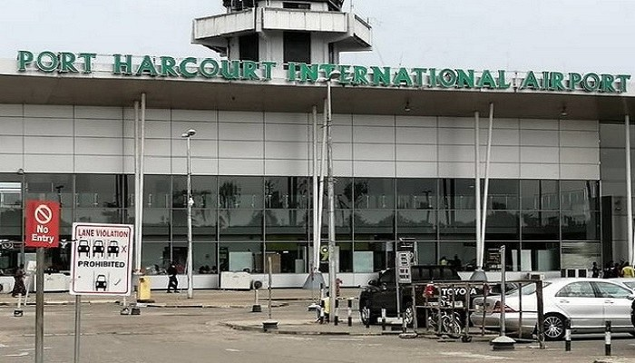

FG hands Port Harcourt airport to private operator for 30 years

The Federal Government has granted Port Harcourt Airport Company Ltd. a 30-year concession to operate the Jeremiah Obafemi Awolowo International Airport in Port Harcourt, Rivers State. Aviation and Aerospace Development Minister Festus Keyamo announced the agreement at a signing ceremony in Abuja on Thursday. He said the arrangement had the approval of President Bola Tinubu and the Federal Executive Council.
Keyamo said the concession was intended to ease the cost of running airports that operate at a loss and attract private investment. The government currently uses profits from major airports to support less profitable facilities, he said. Airport expenses include staff, electricity and diesel for generators, while the government has limited resources to develop commercial services beyond passenger and aircraft operations. Private participation, he added, could improve efficiency and help airports generate more revenue.
The minister said earlier administrations had tried to concession the Port Harcourt airport but faced resistance from aviation unions and lengthy legal disputes. The current administration engaged with unions to address workers’ concerns and safeguard their welfare, he said. Speaking for the concessionaire, R28 Holdings Group Executive Eyo Asuquo said the deal would create jobs rather than lead to job losses. He also pledged substantial infrastructure investment, with the aim of bringing the airport up to standards comparable to facilities in Europe and the United States.
The government has also received concession proposals for Benin Airport and Yola International Airport. The Port Harcourt agreement follows the formal concession of Akanu Ibiam International Airport in Enugu, signed on January 21, 2026. The deals are part of the government’s effort to bring private investment into aviation, improve infrastructure and operations, and reduce the financial burden of managing public airports.
Source: Nairametrics